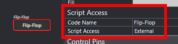
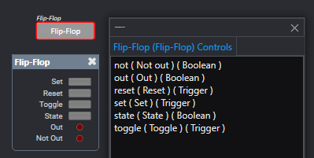

Cybernetically enhanced Q-SYS UIs
Note: This library is not sponsored, supported or endorsed by QSC, LLC. Q-SYS can not provide support for this library, or any issues that may arise from its use.
Script Access property set to All or External in Q-SYS Designer.It is strongly recommended that you start with a plane Svelte project through Vite. (as opposed to SvelteKit - see the section on SvelteKit below).
Create a new Svelte Project with Vite:
npm create vite@latest my-qsys-ui -- --template svelte-ts
cd my-qsys-ui
npm install
Replace my-qsys-ui with the name of your project.
At this point, you may wish to install other UI libraries or tools such as TailwindCSS and DaisyUI.
Install the QRWC-Svelte library:
npm install qrwc-svelte
It is recommended to create a file in the lib directory to provide the QRWC-Svelte instance to all components.
Create a new file in the lib directory called svelte-qrwc.ts:
import { QrwcSvelte } from 'qrwc-svelte';
// Create a new instance of QrwcSvelte and connect to a core at 172.18.1.82
export const qrwcSvelte = new QrwcSvelte("192.168.1.100");
Replace 192.168.1.100 with the IP address or hostname of your Q-SYS Core.
Additional connection options, including redundant core support is available by passing in a ConnectionOptions object instead of a string.
You wil need to make sure that QrwcSvelte is connected to the core before using any components. QrwcSvelte will automatically attempt to connect to the core when it is created.
QrwcSvelte provides the property isConnected as a $state<boolean> rune that can be used to check the connection status.
<script lang="ts">
import { qrwcSvelte } from './lib/svelte-qrwc';
</script>
{#if qrwcSvelte.isConnected}
<h1>Connected</h1>
<!-- Place Svelte Components here-->
{:else}
<h1>Not connected</h1>
{/if}
DO NOT attempt to use any Q-SYS Controls until qrwcSvelte.isConnected is true. Controls will throw an error if the connection is not established.
Q-SYS Controls are used by fetching the control from the QrwcSvelte instance with the appropriate use method.
For example, to use a button control with the component name testControls and control name toggleButton:
create a file named Button.svelte:
<script lang="ts">
import { qrwcSvelte } from "./lib/qrwc-svelte";
const toggleButton = qrwcSvelte.useButton("testControls", "toggleButton");
</script>
<button
style="background-color: {toggleButton.state ? 'green' : '#777'};"
onclick={() => toggleButton.toggle()}>Toggle!
</button>
In this example, the button will change color based on the state of the button control in Q-SYS. When clicked, the button will toggle the state of the button control in Q-SYS. Since the state property of the button is a $state<boolean> rune, the button will automatically update when the state changes in Q-SYS.
Now that you have created the button component, you can use it in your main App.svelte file:
<script lang="ts">
import { qrwcSvelte } from './lib/qrwc-svelte';
import Button from './Button.svelte';
</script>
{#if qrwcSvelte.isConnected}
<h1>Connected</h1>
<Button/>
{:else}
<h1>Not connected</h1>
{/if}
This makes it so that the button is not subscribed to until the connection to the core is established.
All components that you wish to control with the QRWC-Svelte library must have the Script Access property set to All or External in Q-SYS Designer.

The Code Name property is used as the component name in the QRWC-Svelte library.
Control names are used to reference individual controls inside of a component.
Q-SYS Designer provides a way to view all the control names inside a component. From the Tools menu. select View Component Controls Info... to show all the control names in a component.

For the example above, the state control of the flipflop can be accessed with the useButton method of a QRWC-Svelte instance.
<script lang="ts">
//Shared QRWC-Svelte instance - see above
import { qrwcSvelte } from "./lib/qrwc-svelte";
const flipFlopState = qrwcSvelte.useButton("Flip-Flop", "state");
By default teh QRWC-Svelte library will attempt to connect to the core at the provided IP address. However, you can provide additional connection options by passing in a ConnectionOptions object instead of a string. The example, below lists the defaults for each option.
const opts: ConnectionOptions = {
coreIp: "192.168.1.100", // IP/hostname of the core
redundantCoreIp: undefined, // IP/hostname of the redundant core if present
secure: false, // true for https/wss, false for http/ws (default)
poleInterval: 35, // Polling interval in milliseconds (default 35)
controlFilter: undefined, // Filter for control events (default undefined)
};
If only a single core is present, the coreIp option should be set to the IP address or hostname of the core. If a redundant core is present, the redundantCoreIp option should be set to the IP address or hostname of the redundant core. If the redundantCoreIp option is set, the library will automatically switch to the redundant core if the primary core goes offline.
As of initial release of @q-sys/qrwc, authentication is not supported by the q-sys WebSocket. However, the core serves the QRWC WebSocket with both ws (non-secure) and wss (secure) protocols.
It is the responsibility of the developer to ensure that certificates are trusted by the client for both primary and redundant cores.
As of Q-SYS Designer 10.0, the core is incapable of serving the UI from the core's web server. Therefore, if the core is using a self-signed certificate, the developer must ensure that the certificate is trusted by the client, as the client will not have the opportunity to accept the core's certificate in the browser prior to loading the UI.
The pollInterval option sets the interval in milliseconds at which the library will poll the core for control updates. The default is 35 milliseconds. The @q-sys/qrwc library uses a change group (external link) under the hood. It is generally recommended to leave this at the default unless you have a large number of controls that are changing frequently.
The controlFilter option allows you to filter the controls that are subscribed to by the library. The control filter is an array of strings that represent the control names that the library will subscribe to. If the control filter is not provided, the library will subscribe to all controls with external script access in the Q-SYS design.
const opts: ConnectionOptions = {
...
controlFilter: ["testControls","myOtherControl"],
};
Only the components with the code names testControls and myOtherControl will be subscribed to by the library. All other controls will be ignored.
WARNING: If none of controls in the design match the control filter, the library will fail to connect to the core. Make sure that the control filter matches at least one control in the design. As long at least one control is matched, the library will connect and ignore any controls that do not match the filter.
Optionally a filter function can be provided to the control filter. The filter function should return a boolean value based on the control. If the function returns true, the control will be subscribed to. If the function returns false, the control will be ignored.
const opts: ConnectionOptions = {
...
controlFilter: (ctl) => ctl.Name.match(/^testControl[0-9A-Fa-f]{2}/gm) !== null,
};
While the QRWC library can be run in either client side or server side runtimes, the QRWC-Svelte library is not compatible with server side rendering. The QRWC-Svelte library expects to be run in the client's browser.
It is generally easier and faster to use vanilla Svelte without SvelteKit, as the extra featured provided by SvelteKit are not usually necessary for an embedded A/V UI. However, if you wish to use SvelteKit, you will need to make sure that the QRWC-Svelte library is only run in client side code.
It is recommended that the QRWC-Svelte instance is created in a global layout script and provided to all child components. In this layout script, pre-rendering and SSR should be disabled as well.
This example +layout.ts file demonstrates how to create the QRWC-Svelte instance in a SvelteKit layout. The core's IP address is provided by an environment variable, and the QRWC-Svelte instance is provided to all child components.
//src/routes/+layout.ts
import { QrwcSvelte } from '$lib/index.js';
import type { LayoutLoad } from './$types.js';
import { PUBLIC_COREIP } from '$env/static/public';
import { browser } from '$app/environment';
//Disable SSR and pre-rendering
export const ssr = false;
export const prerender = false;
export const load: LayoutLoad = async ({ params }) => {
if (browser) {
return {
qrwc: new QrwcSvelte(PUBLIC_COREIP)
};
}
};
In order to make sure that Q-SYS controls are not subscribed to before the core is connected, we can use a global +layout.svelte file to check the connection before rendering the child components.
<!-- src/routes/+layout.svelte -->
<script lang="ts">
import '../app.css';
import type { LayoutData } from './$types.js';
import type { Snippet } from 'svelte';
let { data, children }: { data: LayoutData, children: Snippet } = $props();
</script>
{#if data.qrwc?.isConnected}
<p>Connected</p>
{@render children()}
{:else}
<p>{data.qrwc?.connectionStatus}</p>
<p>Connection Attempt: {data.qrwc?.connectionAttemptCount}</p>
{/if}
At this point, you can use any Q-SYS controls in page components.
<!-- src/routes/+page.svelte -->
<script lang="ts">
let { data } = $props();
const toggleButton = data.qrwc?.useButton("testControls", "toggleButton");
</script>
<button
style="background-color: {toggleButton?.state ? 'green' : '#777'};"
onclick={() => toggleButton?.toggle()}>Toggle!
</button>